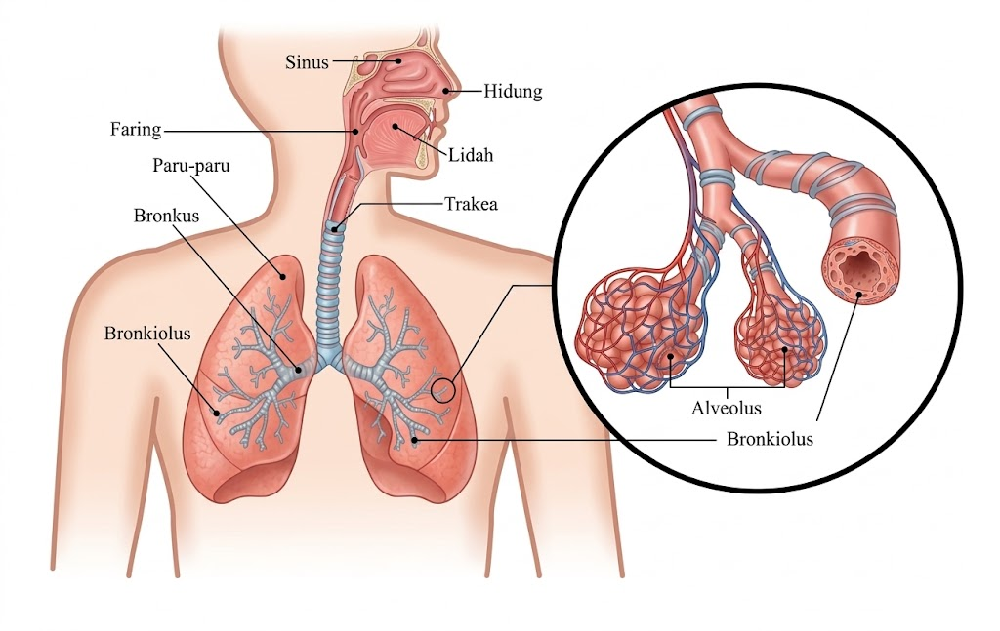
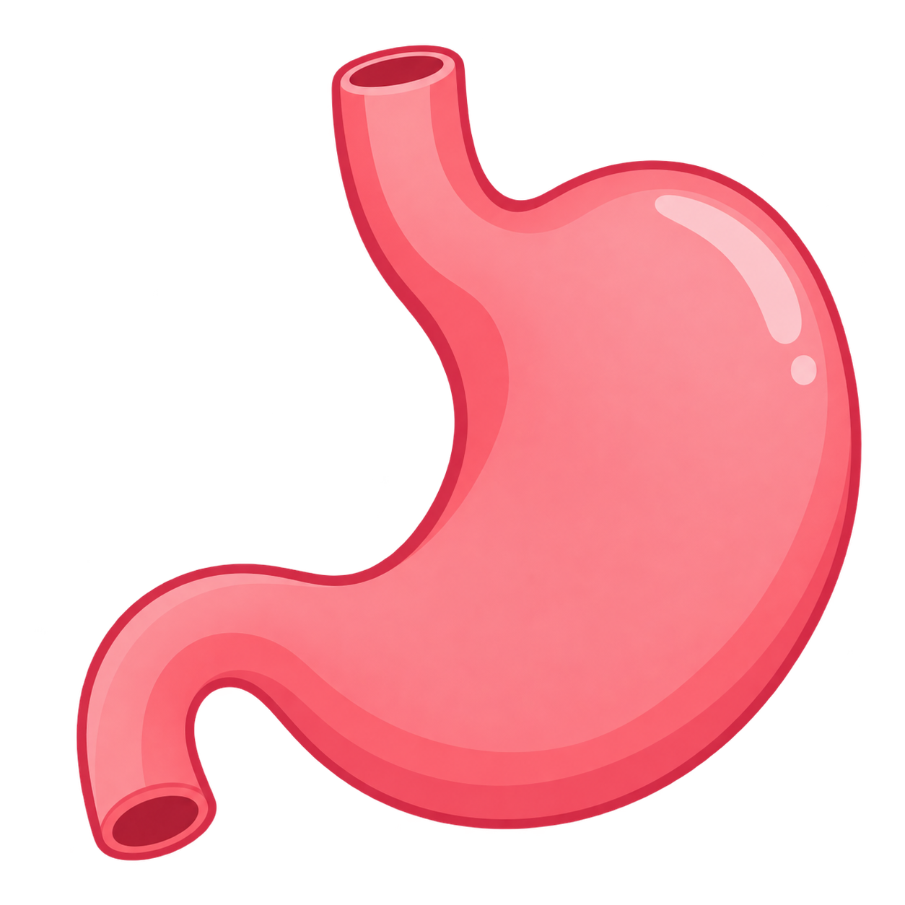
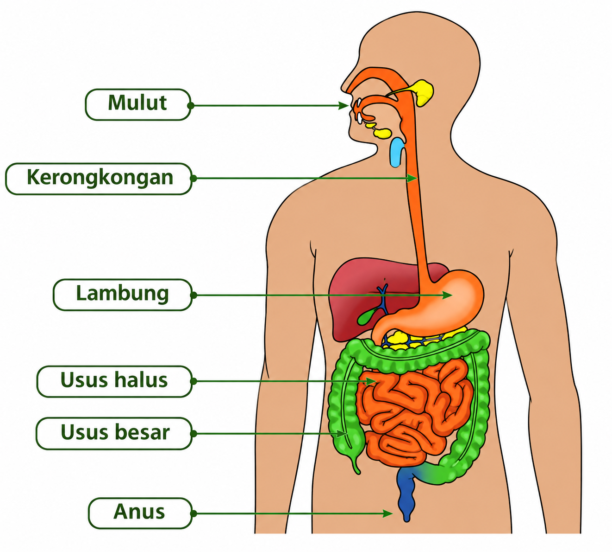
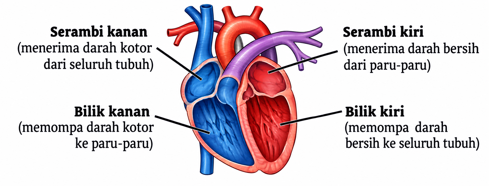
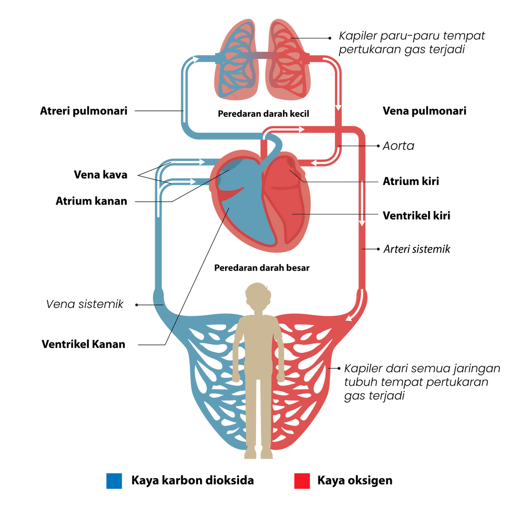

1. Apa Itu Sistem Pernapasan?
Bernapas adalah proses menghirup oksigen (zat asam) dan mengeluarkan karbondioksida (zat asam arang).

Pilih materi pembelajaran yang ingin kamu pelajari hari ini!

Bernapas adalah proses menghirup oksigen (zat asam) dan mengeluarkan karbondioksida (zat asam arang).

Lubang
hidung: tempat keluar masuk udara.
Rambut hidung: menyaring debu/kotoran.
Selaput lendir: menghangatkan dan melembabkan udara.
Di dalamnya terdapat pita suara dan otot yang mengatur ketegangan pita suara sehingga timbul bunyi.
Berbentuk pipa. Memiliki selaput lendir berambut getar untuk menolak debu. Bercabang dua (bronkus) menuju paru-paru kanan & kiri.
Terletak di rongga dada di atas diafragma. Terdiri dari paru-paru kanan (3 gelambir) dan kiri (2 gelambir). Dibungkus selaput pleura.
Ujung dari bronkeolus berupa kantong-kantong kecil (gelembung). Berfungsi sebagai tempat pertukaran oksigen dan karbondioksida.
Paru-paru mengembang dan mengempis melalui gerakan tulang rusuk dan diafragma (sekat antara rongga dada & perut).
Klik langkah di sebelah kiri untuk melihat penjelasan alurnya!
Terjadi karena aktivitas otot antar tulang rusuk. Apabila otot berkerut (berkontraksi), tulang rusuk terangkat, volume rongga dada membesar, dan udara luar yang kaya O₂ masuk ke paru-paru (inspirasi).
Terjadi karena aktivitas otot diafragma. Apabila otot berkontraksi, posisi diafragma mendatar, ruang rongga dada membesar, dan udara luar masuk ke paru-paru (inspirasi).
Disebabkan oleh virus. Gejalanya demam, pilek, sakit kepala, dan hidung berair. Dicegah dengan minum vitamin C dan istirahat teratur.
Penyempitan saluran pernapasan mendadak akibat alergi (bulu, debu, cuaca, asap). Gejalanya sulit bernapas dan napas berbunyi.
Peradangan pada selaput lendir trakea & bronkus (akut & kronis). Ditandai dengan batuk berdahak dan demam.
Radang paru akut akibat infeksi kuman. Gejala: sesak napas, dada nyeri, batuk berlendir. Butuh perawatan antibiotik dan oksigen.
Infeksi bakteri M. tuberculosis. Gejala: mudah letih, berat badan turun, batuk berdarah. Dicegah lewat vaksin BCG.
Infeksi bakteri yang menyebabkan sakit saat menelan (radang faring). Dipteri ditandai demam & sesak napas, dicegah dengan vaksin DPT.
Pencernaan adalah proses mengubah zat-zat makanan menjadi sari-sari makanan sehingga dapat diserap oleh tubuh kita.
Pencernaan yang dibantu oleh gerakan fisik seperti gigi meremas dan mengunyah. Terjadi di dalam mulut dan lambung.
Pencernaan yang dibantu oleh cairan/getah enzim-enzim pencernaan. Terjadi di dalam mulut, lambung, dan usus 12 jari.

Gigi (Dewasa: 32, Anak: 20): Gigi taring untuk merobek, gigi seri untuk memotong, gigi geraham untuk mengunyah/melumatkan makanan.
Lidah: Mengatur letak makanan, membolak-balik, mengecap rasa, mendorong makanan ke kerongkongan, dan membantu berbicara.
Menyalurkan makanan menuju lambung melalui Gerak Peristaltik (gerak mendorong dan memijat makanan masuk ke lambung).
Melakukan pencernaan mekanis (otot dinding meremas/mengaduk makanan) dan kimiawi (dibantu enzim).
Terdiri dari 3 bagian: Duodenum (usus 12 jari ±25cm), Jejunum (usus kosong ±7m), dan Ileum (usus penyerapan ±1m).
Di usus 12 jari, terdapat getah pankreas yang kaya enzim.
Terjadi penyerapan air dan garam mineral.
Terdapat bakteri pembusuk (Escherichia coli) yang membusukkan sisa makanan menjadi kotoran (tinja).
Tempat pembuangan sisa makanan dari tubuh.
*Seluruh proses pencernaan dari makanan sampai pelepasan berlangsung antara 12 – 24 jam.
Gejala: Buang air besar encer lebih dari 4x sehari, perut sakit.
Penyebab: Makanan kotor, alergi, asam/pedas berlebih.
Pencegahan: Minum oralit (larutan gula dan garam).
Penyakit lambung & usus 12 jari akibat produksi asam klorida berlebih.
Gejala: Perut perih dan mulas bila terlambat makan.
Penyebab: Penumpukan kotoran di usus buntu bagian umbai cacing.
Gejala: Nyeri perut kanan bawah, mual, muntah, dan demam.
Penyakit peradangan pada usus karena kebersihan makan/minum tidak terjaga.
Gejala: Menggigil, lemah, mual, demam tinggi, punggung sakit.
Penyebab: Sulit BAB karena sering menahan BAB atau stres/cemas.
Pencegahan: Makan berserat (sayur/buah), banyak minum, BAB teratur.
Sariawan: Radang bibir/gusi karena tergigit, alergi pedas, kurang vitamin C.
Xerostamia: Mulut sangat kering & sedikit air liur. Sulit menelan akibat kurang enzim amilase.
Penyebab: Serangan virus pada hati.
Gejala: Bagian putih mata dan air seni berubah kekuningan, letih, hilang nafsu makan.
Penyebab: Bakteri dalam makanan.
Gejala: Muntah-muntah, diare, nyeri dada dan perut, demam.
Jantung berfungsi sebagai pompa darah ke seluruh tubuh. Letaknya di rongga dada sebelah kiri, sebesar kepalan tangan (±300 gr), dibungkus selaput Perikardium.

Berfungsi mencegah bercampurnya darah bersih dan darah kotor.
Darah keluar dari jantung membawa oksigen ke seluruh tubuh, dan kembali ke jantung membawa karbondioksida.
Darah dari jantung menuju paru-paru membawa CO₂, dan kembali membawa oksigen ke jantung.

Diastol: Jantung mengendur, darah masuk dari vena ke serambi.
Sistol: Serambi & bilik mengerut, darah mengalir ke pembuluh nadi.
Anak-anak: 90 – 100 kali/menit.
Dewasa: 70 – 80 kali/menit.
Alat periksa: Elektrokardiograf.
Tekanan darah normal: 120/80 mmHg.
Peredaran darah manusia bersifat tertutup (selalu di dalam pembuluh
darah).
Penemu sistem peredaran darah: William Harvey (1616).
Grafik denyut jantung disebut Elektrokardiogram.
Pembuluh darah adalah saluran tempat mengalirnya darah dari seluruh tubuh menuju jantung atau sebaliknya, serta mengangkut nutrisi dan hormon ke semua organ tubuh.
Mengalirkan darah keluar dari jantung. Dinding tebal, kuat, elastis. Letaknya agak dalam (tersembunyi). Jika luka, darah memancar. Arteri terbesar: Aorta.
Mengalirkan darah masuk ke jantung. Dinding tipis, tidak elastis. Letaknya dekat permukaan (kebiruan). Jika luka, darah tidak memancar. Terdiri dari vena atas & vena bawah.
| No | Pembuluh Nadi (Arteri) | Pembuluh Balik (Vena) |
|---|---|---|
| 1 | Tempatnya agak ke dalam (tersembunyi) | Dekat permukaan tubuh (kebiruan) |
| 2 | Dinding tebal, kuat, elastis | Dinding tipis, tidak elastis |
| 3 | Aliran darah meninggalkan jantung | Aliran darah menuju jantung |
| 4 | Katup hanya di satu tempat dekat jantung | Katup di sepanjang pembuluh |
| 5 | Jika luka, darah memancar | Jika luka, darah tidak memancar |
| 6 | Denyut terasa | Denyut tidak terasa |
Pembuluh darah yang sangat halus dan berdinding tipis, merupakan ujung-ujung dari pembuluh balik dan nadi. Tempat terjadinya pertukaran zat antara darah dan jaringan tubuh.
Penyebab: Kekurangan zat besi, pendarahan, atau kanker tulang.
Gejala: Lemah, cepat lelah, kesemutan, jantung berdebar.
Pencegahan: Makan makanan yang mengandung zat besi.
Penyebab: Produksi sel darah putih yang berlebihan hingga mengganggu keseimbangan komposisi darah.
Gejala: Lelah, kurang nafsu makan, nyeri tulang, pendarahan di kulit.
Penyebab: Penebalan dinding arteri akibat penumpukan plaque (lemak, karbohidrat, kalsium) sehingga pembuluh menyempit.
Pencegahan: Tidak mengonsumsi garam berlebihan.
Tekanan darah rendah (<90/70 mmHg).
Gejala: Mudah pusing saat berdiri, badan lesu, tangan & kaki dingin, mata berkunang-kunang.
Penyakit keturunan dimana darah sukar membeku. Akibatnya luka kecil pun dapat menyebabkan pendarahan terus-menerus.
Penyebab: Kelebihan zat kapur, lemak, kolesterol, dan gula dalam tubuh sehingga dinding pembuluh nadi mengeras.
Tersumbatnya pembuluh darah arteri di otak oleh plaque/gumpalan darah sehingga suplai darah ke otak terhenti tiba-tiba.
Jika di pembuluh koroner jantung → Jantung Koroner.
Pelebaran pembuluh vena akibat bendungan atau lemahnya katup vena.
Varises di sekitar anus disebut Wasir. Dicegah dengan olahraga teratur.
Sistem Tubuh Manusia — 25 Soal Pilihan Ganda
SOAL 1
🎉
Kuis Sistem Pernapasan
0 / 8
Jawaban Benar